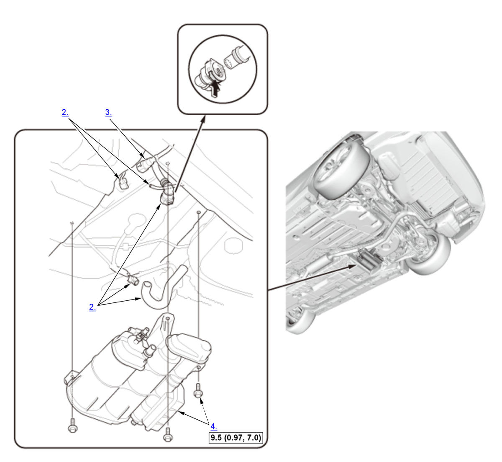

Removal and Installation: Procedure
NOTE:
Numbered call-outs in figure pertain to list numbers in following procedure.

 Courtesy of HONDA, U.S.A., INC.
Courtesy of HONDA, U.S.A., INC. |
Torque: N.m (kgf.m, lbf.ft) |
- Front Floor Undercover - Remove
- Fuel Vent Tube, Hose, and Connector (EVAP Canister Vent Shut Valve and FTP Sensor) - Disconnect
- Quick-Connect Fitting - Disconnect
- EVAP Canister Assembly - Remove
- EVAP Canister Vent Shut Valve - Remove
- FTP Sensor - Remove
- All Removed Parts - Install
1. Install the parts in the reverse order of removal with a new retainer and new O-rings.
NOTE: Make sure the hose clamps are properly positioned and tightened .